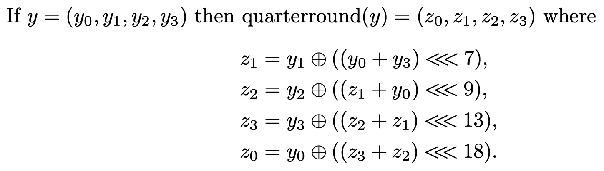

The Quarter Round Function
The definitions below can be found in QuarterRound.hs and the testing code can be found in Test_QuarterRound.hs.
Looking at the pseudocode functions defined in the spec, it is clear that they are, indeed, pure functions in the same sense as Haskell. Hence, it is quite straightforward to transliterate these functions into Haskell/ReWire and this section gives the first such transliteration. An advantage of writing in Haskell rather than pseudocode is that definitions may are type-checked by GHC, providing a quick means of gaining assurance and/or finding stupid bugs.
Inputs and Outputs
The quarterround function takes a 4-word sequence as input and produces a 4-word sequence as output. We represent these 4-word sequences as a 4-tuple in Haskell and each word as a W 32. That means that the type of the function will be:
quarterround :: (W 32 , W 32 , W 32 , W 32) -> (W 32 , W 32 , W 32 , W 32)
Definition
The quarterround function from page 2 of the spec is given as:

Rendering this function in Haskell is simple:
quarterround :: (W 32 , W 32 , W 32 , W 32) -> (W 32 , W 32 , W 32 , W 32)
quarterround (y0 , y1 , y2 , y3) = (z0 , z1 , z2 , z3)
where
z0 , z1 , z2 , z3 :: W 32
z1 = y1 ^ rotL (lit 7) (y0 + y3)
z2 = y2 ^ rotL (lit 9) (z1 + y0)
z3 = y3 ^ rotL (lit 13) (z2 + z1)
z0 = y0 ^ rotL (lit 18) (z3 + z2)
Note how closely the Haskell text mirrors the definition from the spec text. The XOR operation (\(\oplus\)) is written as ^, the left rotate \(\lll\) is written as rotL, etc.
Examples
Bernstein provides examples that one can use to sanity-check definitions of quarterround; here they are:

Because we have the function using Haskell/ReWire, we can just evaluate these tests automatically; here are the seven tests from the spec:
alltests :: [Bool]
alltests = [test1 , test2 , test3 , test4 , test5 , test6 , test7]
test1 , test2 , test3 , test4 , test5 , test6 , test7 :: Bool
test1 = quarterround (lit 0x00000000 , lit 0x00000000 , lit 0x00000000 , lit 0x00000000)
== (lit 0x00000000 , lit 0x00000000 , lit 0x00000000 , lit 0x00000000)
test2 = quarterround (lit 0x00000001 , lit 0x00000000 , lit 0x00000000 , lit 0x00000000)
== (lit 0x08008145 , lit 0x00000080 , lit 0x00010200 , lit 0x20500000)
test3 = quarterround (lit 0x00000000 , lit 0x00000001 , lit 0x00000000 , lit 0x00000000)
== (lit 0x88000100 , lit 0x00000001 , lit 0x00000200 , lit 0x00402000)
test4 = quarterround (lit 0x00000000 , lit 0x00000000 , lit 0x00000001 , lit 0x00000000)
== (lit 0x80040000 , lit 0x00000000 , lit 0x00000001 , lit 0x00002000)
test5 = quarterround (lit 0x00000000 , lit 0x00000000 , lit 0x00000000 , lit 0x00000001)
== (lit 0x00048044 , lit 0x00000080 , lit 0x00010000 , lit 0x20100001)
test6 = quarterround (lit 0xe7e8c006 , lit 0xc4f9417d , lit 0x6479b4b2 , lit 0x68c67137)
== (lit 0xe876d72b , lit 0x9361dfd5 , lit 0xf1460244 , lit 0x948541a3)
test7 = quarterround (lit 0xd3917c5b , lit 0x55f1c407 , lit 0x52a58a7a , lit 0x8f887a3b)
== (lit 0x3e2f308c , lit 0xd90a8f36 , lit 0x6ab2a923 , lit 0x2883524c)
Now, each test is computed:
λ> alltests
[True,True,True,True,True,True,True]